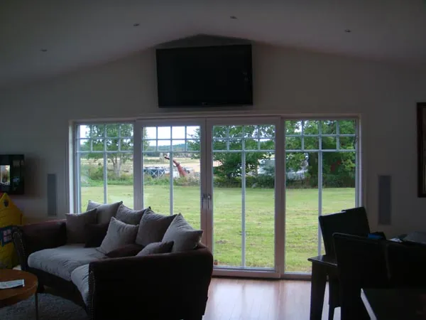
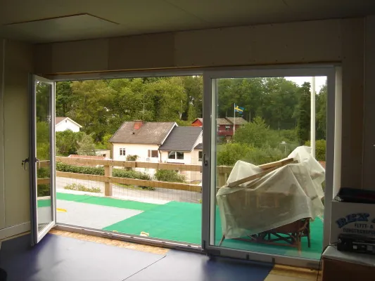
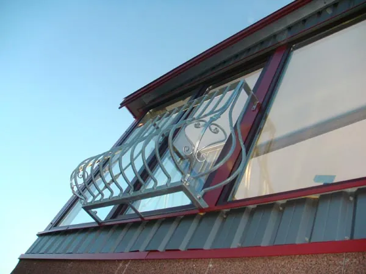
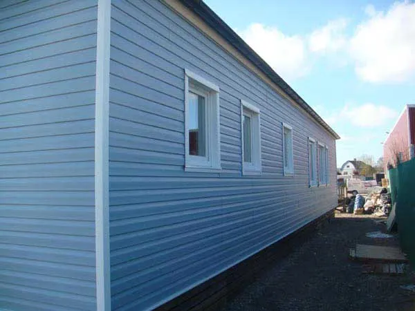
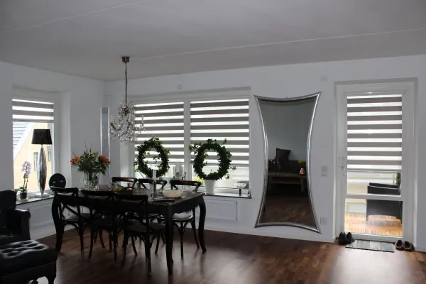
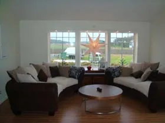
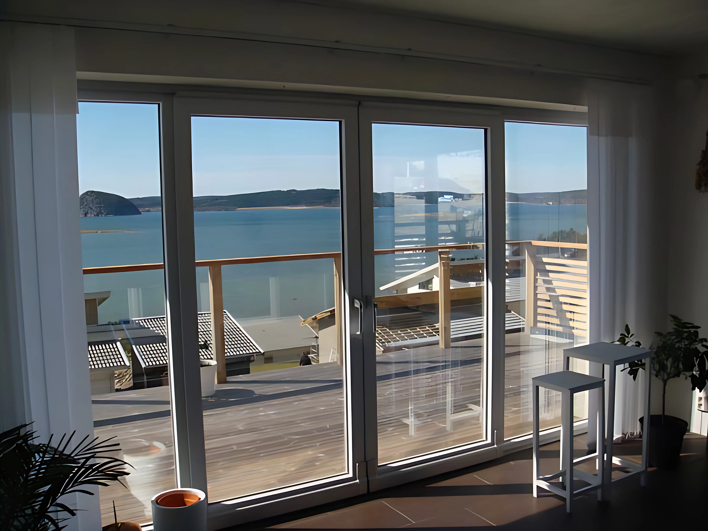

Fönster och dörrar i PVC – tillverkade efter mått
Allt tillverkas på beställning i vår fabrik i Lödöse. Energisnålt, underhållsfritt och kostnadseffektivt.

Fönster
Energisnåla PVC-fönster med 2- eller 3-glas, dreh-kipp och specialformer.

Balkong- & altandörrar
Inåt- och utåtgående dörrar, pardörrar och källardörrar.

Skjutdörrar
Upp till 8 m breda och 2,5 m höga – vår storsäljare.

Kombinerade dörrar
Skjutdörr och svängdörr i samma parti – stor öppning.

Takfönster
Tyska ROTO-takfönster, motsvarighet till Velux.

Underhållsfria fasader
Fasadpanel i vinyl som aldrig behöver målas.

Persienner & rullgardiner
Persienner, rullgardiner och myggnät anpassade till fönstren.

Tillval
Glas, handtag och lås, spröjs och övriga tillbehör.

Berätta vad du planerar – vi tar fram en offert.
Allt tillverkas på beställning i vår fabrik i Lödöse. Välkommen att besöka utställningen i Lilla Edet, eller skicka en förfrågan direkt.